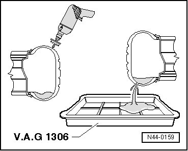

Tire, Removing
Tire, Removing
Tires which have been filled or sealed with tire sealant, must be drained before removing from the wheel.
CAUTION!
• Avoid eye or skin contact with tire sealant.
• It is hazardous to health and can irritate the eyes and cause allergies.
• Wear protective gloves and glasses when removing tires.
- Set wheel on an even surface.
- Remove tire valve core.
- Carefully drill hole in tire in area of shoulder using suitable drill.

- Hold wheel over drip tray and allow tire sealant to drain.
- Remove tire from wheel.
- Clean wheel, for example using a damp cloth.